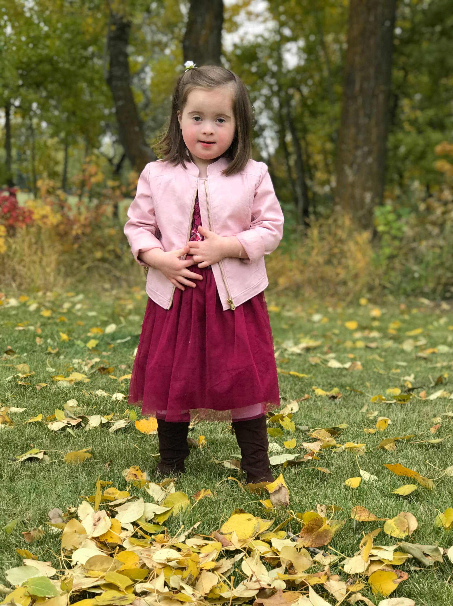

Jordan Grace
America Down syndromeAt 20 weeks pregnant we mourned the child we wouldn’t have, and that’s natural. When Jordan Grace came, we never expected the child God created for us. Jordan Grace is better than anything we could have ever dreamed of.
She is who we should all strive to be. A person who loves with her whole heart, who enjoys the journey as much as the destination. Someone who lives life to the fullest and doesn’t worry about tomorrow.
This may not be the life you imagined, but I promise you, it will be an unexpected joyous one.
We strive each day to normalize Down syndrome, to turn fear into joy!
Get involved Back to all stories